- 대파괴 이후의 도쿄
- 신쥬쿠 지하거리 (대파괴 이후)
- 오자와의 오피스
- 시부야
- 소녀의 정신세계
- 록본기
- 대 지하도
- 旧경시청
- 도쿄 타워 (대홍수 전)
- 두 방향의 길
- 시나가와 방면 루트
- 이케부쿠로 방면 루트
- 사천왕의 관
- 최후의 선택
대파괴 이후의 도쿄
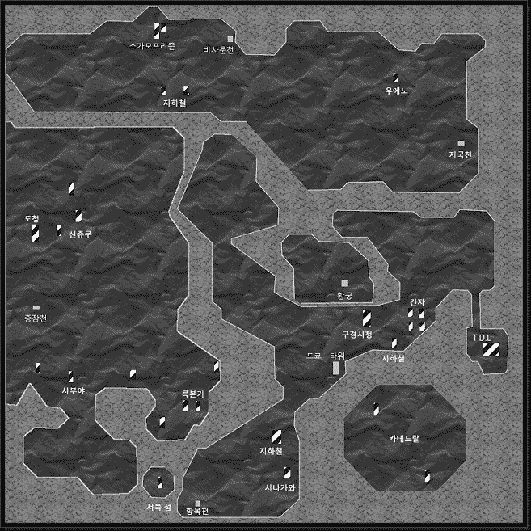
신쥬쿠 지하거리 (대파괴 이후)
대파괴 후의 이치가야 부근으로 와버렸다. 조금 이동하면 초라한 남자가 구걸을 한다. 돈을 주면 마카가 아니라고 화를 낸다. 그리고 신쥬쿠의 위치를 알려준다. 북서쪽으로 가면 신쥬쿠에 갈 수 있다.
약간 시설이 바뀌었는데, 우선 신쥬쿠 동쪽 입구에는 보석을 아이템과 정령으로 교환할 수 있는 '라그의 가게'가 있다. 그 밖에는 상점의 명칭이 바뀐 정도이다.
우선 돈을 마련하는 것이 급선무이다. 북쪽 바 안에서 노인이 엔화에서 마화(マッカ)로 환전을 해준다.
이제 얼마 안되는 돈으로 쇼핑을 해보자. 우선 무기점에서 신경탄(神経弾)을 꼭 사두자. 이 탄은 상성을 무시하고 효과가 있다.
방어구는 '대화염'이 있는 파이어 가드(ファイアガード)와 '대전격'이 있는 선더 가드(サンダーガード)를 구입하자.
남동쪽 바에는 내려가는 계단이 있는데 지하에 끝에 있는 남자와 대화를 한다. 오자와에 대해 알려준다.
이전 레지스탕스 본부 입구에서 웬디고와 대화를 하자. 질문에 YES를 선택해서 '사귀 웬디고(28)'과 전투를 한다. 쓰러뜨린 후 안에서 '소울 다이버'와 만난다.
이제 오자와를 쓰러뜨리기 위해 오자와의 오피스(신쥬쿠 빌딩 2F)에 가자.
오자와의 오피스
신쥬쿠 지하거리의 남서쪽에서 계단을 찾아 올라가면 신쥬쿠 빌딩이 나온다.
빌딩 2F에서 오자와와 만나고 '귀신 타케미나카타'를 소환한다. 타케미나카타의 강력한 힘 때문에 패배한 일행은 일단 후퇴한다.
오피스 밖으로 나가려고 하면 카오스 히어로가 더욱 강한 힘이 필요하다고 한다. 이후 '사교의 관'에 가면 카오스 히어로와 레벨이 가장 높은 악마가 합체한다. (CHAOS악마 우선)
카오스 히어로의 장비를 미리 벗겨 놓고 주인공이 사용하거나 파는 것이 좋다. 조금 있으면 영구 이탈하게 된다.
다시 오자와의 오피스에 찾아가서
BOSS:귀신 타케미나카타와 전투를 한다. 강력해진 카오스 히어로의 마법으로 상대하면 쓰러뜨리기 쉽다. '마카쟈마'가 통하니 미리 써두는 것도 좋다.
"오자와의 숨통을 끊어버릴까? 고민하는 선택지가 나온다.
YES → YES → CHAOS
YES → NO → 변동 없음 (NEUTRAL)
NO → YES → 변동 없음 (NEUTRAL)
NO → NO → LAW
카오스 히어로가 일행에서 영구 이탈한다. 무기점 옆 방에서 카오스 히어로의 편지를 읽을 수 있다.
오자와가 없어지니 신쥬쿠 지하에 악마가 출현하기 시작한다. 다시 소울 다이버를 만나서 오자와를 해치웠다는 소식을 전해주고 풀어준다.
신쥬쿠 밖으로 나와서 남쪽의 시부야로 가자.
시부야
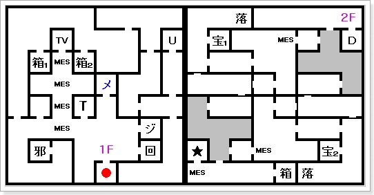
- 箱1 : 운의 향
- 箱2 : 지혜의 향
- 箱 (2F) : 마력의 향
- 宝1 : 가넷
- 宝2 : 다이아몬드
- ★ : 히로인
시부야 1F의 건설 중인 메시아 교회에 10회 기부를 하고 다음 달이 뜨면 교회가 완성된다. → LAW
이 교회에서 반혼향(反魂香)을 구입할 수 있다.
2F에 히로인이 갇혀있다. 히로인을 만나고 다시 신쥬쿠의 소울 다이버(환전 노인이 있던 바의 근처)를 만나고 다시 히로인이 있는 곳으로 간다.
소울 다이버의 힘을 통해 소녀의 정신세계로 이동한다.
소녀의 정신세계
BOSS:귀녀 알케니 HP 700
총, 빙결에 강함
상태 이상 마법을 주로 사용해 온다. 때문에 상대하기가 까다롭다. 이번에는 마카쟈마도 안 통하고, 당연히 상태 이상 마법도 보스에겐 무효.
마법을 1회 반사하는 팬타그램(ペンタグラム)을 사용하면 쉽게 싸울 수 있다. 팬타그램은 가이아 신전에서 팔고 있다.
똥구멍에서 거미줄을 뿜는 짝퉁 스파이더맨. 알케니를 쓰러뜨리고 밖으로 나오면 히로인이 동료가 된다. 이제 록본기로 가자.
록본기에 가는 길은 우선 맨 처음 금강신계에서 현재로 온 위치(이치가야)에서 남동쪽으로 간다. 결계 근처의 건물에 들어가면 지하도를 통해 록본기 방면으로 갈 수 있다.
록본기
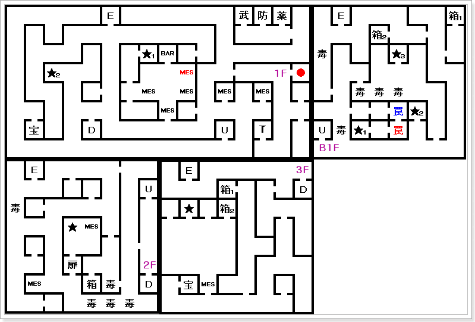
1F
- ★1 : 소꿉친구(보디코니안)
- ★2 : 앨리스
- 宝 : 아메지스트
B1F
2F
3F
- ★ : 적백작
- 宝 : 토파즈
- 箱1 : 함정
- 箱2 : 힘의 향
디스코 내부. 바(BAR) 좌측 방에 있는 소꿉친구에게 반혼향(反魂香)을 가져다 주면 성불한다 → LAW
록본기 1F 서쪽에서 앨리스를 만난다. 앨리스는 적백작을 만나보라고 한다.
우선 B1F의 보상에서 협견의 항아리(脇見の壺)를 입수한다.
3F의 적백의 방 입구로 들어가자. 로우 히어로가 사망 상태이면 진입이 불가능하다.
안에서 적백작과 대화하면 앨리스가 신쥬쿠에서 정크숍에서 팔고 있는 히란야(ヒランヤ)를 구해오라고 한다.
히란야를 구입한 뒤 다시 록본기의 앨리스를 만나면 '죽어 줄래?'라고 묻는다. 어느 것을 선택해도
BOSS:마왕 베리알과 전투를 한다.
협견의 항아리가 없으면 BOSS:마왕 베리알과 전투 (2턴째 자동으로 전투 종료)
협견의 항아리를 가지고 있으면 베리알을 봉인한다.
베리알을 1턴 이내에 쓰러뜨리지 못 하면 경험치도 못 받고 강제로 전투가 종료된다.
일반적인 플레이로는 협견의 항아리를 구해서 봉인해버리는 것이 좋다.
베리알을 봉인하거나 쓰러뜨리면 유리코가 나타나서 그 항아리를 달라고 한다.
거절하면 BIND 상태가 되며 항아리를 빼앗긴다. 그냥 줘버리자.
적백작의 방 밖으로 나가려고 하면 기습을 받고 로우 히어로가 사망한다. (장비를 미리 벗겨두자)
이후 록본기에서 악마가 출현한다.
록본기 B1F에서 흑남작을 만나면 정체를 들어낸다.
BOSS:타천사 네비로스 HP1002
화염, 전격에 강함. 총, 빙결, 신경, 긴박 무효
'타루카쟈'와 '메디아'만 있으면 어렵지 않은 보스다.
적백작, 흑남작이 사라지면서 록본기의 결계가 풀렸다. 이후 월령이 5번 지나면 록본기의 거리가 부흥해서 상점이 들어선다.
이후 록본기 북쪽 건물에 들어가면 대 지하도가 나온다.
대 지하도
지하도는 4개의 지역에 연결되어 있다.
旧경시청(북), 록본기(남), 긴자(동), 이케부쿠로(서)
지하도 B3F에서 로우 히어로의 영혼과 만난다. 경시청에 대해서 알려준다.
B3F 중앙의 방에서 STEVEN을 만나 대화에 'YES'로 대답하면, 파티에 소환할 수 있는 중마를 4마리로 늘려준다.
우선 진행해야 될 장소는 경시청이지만, 잠시 긴자에서 장비를 정리하고 나서 경시청으로 향하는 것이 좋다.
긴자에서 지상의 출구로 나온 후 서쪽으로 조금 가면 경시청 1F에 갈 수 있다.
旧경시청
긴자 지상을 통해 왔으면 1F의 입구 왼쪽에 있는 엘레베이터를 타고 곧바로 5F으로 가자.
5F의 북쪽 끝 방에서 미친 과학자를 만난다.
미친 과학자의 "가라! 로보트 군단!"이라는 멋진(?)대사 후 출현한 '머신 T95C/P' 8대와 전투를 한다.
쓰러뜨린 후, "시스템을 파괴합니까?" 라는 물음에 일단 'NO'라고 대답하고 파티를 정비하자.
다시 질문에 'YES'를 선택하면
BOSS:머신 경비시스템과 전투를 한다.
BOSS:머신 경비시스템 HP1310
화염, 전격에 강함. 총, 빙결, 신경, 긴박 무효
전격계에 약할 줄 알았지만 내성이 있다. 역시 보스전은 검과 타루카쟈&회복 마법이 기본 전술.
보스가 사용하는 유일한 기술로 '전격(電撃)'이 있으니 이전에 신쥬쿠에서 구입한 선더 가드(サンダーガード)를 착용하면 좋다.
쓰러뜨리면 메모리 보드(メモリーボード)를 입수한다.
도쿄 타워 (대홍수 전)
긴자 또는 旧경시청의 지상에서 이동하다보면 갈 수 있다. 스토리 전개와 관계 없어서 필요 없다면 지나쳐도 된다.
30F에 있는 메시아교의 여성과 이야기한다.
NEUTRAL 속성으로 「신의 가르침이 필요한가?」의 물음에 NO라고 대답하면 BOSS:천사 카즈펠과 전투.
CHAOS 속성인 경우 BOSS:천사 카즈펠과 전투.
BOSS:천사 카즈펠 HP1540
총, 빙결에 강함
마하잔마, 해피루마, 마린카린
두 방향의 길
이제부터 진행은 최종 속성 변화에 영향을 많이 주는 이벤트가 많다. 원하는 루트를 타고 싶다면 주의해서 행동할 것.
크게 2개의 루트로 구분한다. "시나가와 방면 루트"와 "이케부쿠로 방면 루트"이다.
이전에 '고토우'와 '토르만' 사이에서 왕복한 것과 같은 것이다. 양쪽 다 끝내야만 최종 분기를 선택할 수 있다.
시나가와 방면 루트
긴자 B2F의 악마 사용자를 쓰러뜨리고, 그 길을 통과해 시나가와 방면으로 갈 수 있다.
긴자 → 시나가와
이케부쿠로 방면 루트
대 지하도의 서쪽 길로 가면 이케부쿠로 방면에 갈 수 있다. 여기서 스가모프리즌을 거쳐 우에노, T.D.L까지 가는 루트이다.
이케부쿠로/스가모프리즌 → 우에노 → T.D.L
진행 난이도를 생각하면 첫 번째로 '시나가와 방면'을 클리어 한 뒤, '이케부쿠로 방면'으로 가면 좋다.
시나가와 방면 루트
긴자
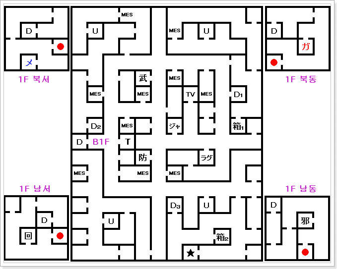
1F
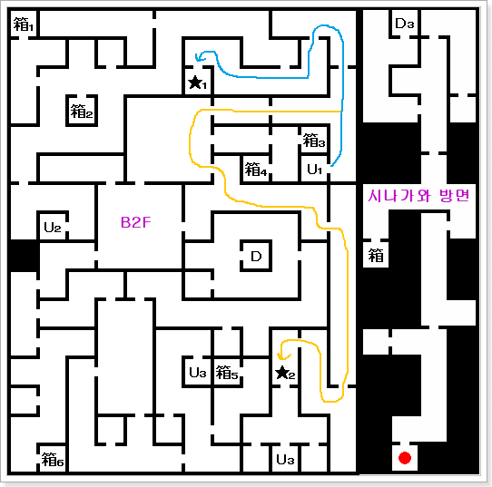
B2F
- 箱1 : 운의 향
- 箱2 : 함정
- 箱3 : 속도의 향
- 箱4 : 지혜의 향
- 箱5 : 함정
- 箱6 : 함정
- ★1 : STEVEN
- ★2 : 악마 사용자
- D : 카테드랄 지하 통로(NEUTRAL 루트)
B1F 시나가와 방면
긴자 B2F의 북쪽 방에 STEVEN이 있다. 경시청에서 얻은 메모리 보드가 있으면 중마의 스톡 수가 +2 된다.
B2F의 남동쪽에 가면 악마 사용자가 돈을 요구한다. 'NO'라고 대답하면 악마들과 3 연전.
제1전 : 악령 피샤체(19) × 8
제2전 : 유귀 베이코쿠(25) × 8
제3전 : 사귀 라케(37) × 8
라케와 싸울 때가 조금 힘든데 히로인의 속도가 빠르다면 도르미나(ドルミナー)를 사용해서 잠재우면 좋다. 매우 잘 통한다.
이 통로를 따라 가면 시나가와 방면에 갈 수 있게 된다.
시나가와
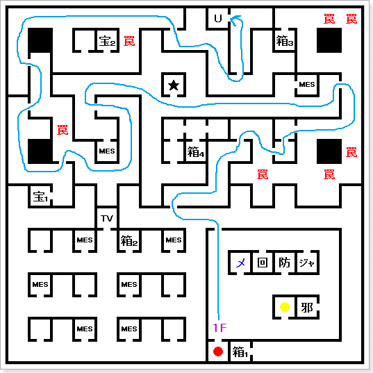
1F
- 宝1 : 오팔
- 宝2 : 에메랄드
- ★ : 로우 히어로의 동상
- 箱1 : 코어쉴드
- 箱2 : 지혜의 향
- 箱3 : 지혜의 향
- 箱4 : 속도의 향
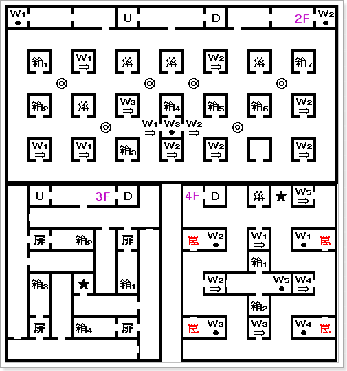
2F
- 箱1 : 속도의 향
- 箱2 : 함정
- 箱3 : 운의 향
- 箱4 : 쿠사나가의 검
'W3'에서 보상까지 이동 가능하다.
- 箱5 : 함정
- 箱6 : 체력의 향
- 箱7 : 함정
3F
- ★ : 메시아 대교회
- 箱1 : 지저스 아머(ジーザスアーマー)
- 箱2 : 지저스 헬름(ジーザスヘルム)
- 箱3 : 지저스 레그(ジーザスレッグ)
- 箱4 : 지저스 글러브(ジーザスグラブ)
4F
- ★ : 악마 사용자(사문의 구슬)
- 箱1 : 지혜의 향
- 箱2 : 마력의 향
시나가와 2F에서는 워프를 타고 도착하는 장소에서 합체검 쿠사나가의 검(草薙の剣)을 입수할 수 있다.
3F의 열리지 않는 문은 지저스 시리즈 방어구가 있다.
주인공이 극 LAW 속성이며, 레벨이 65이상일 때 대교회를 찾아오면, 메시아교의 세례를 받고 문을 열리게 된다.
3F의 대교회에서 부활한 로우 히어로를 만난다.
극 CHAOS 속성의 경우 : 강제적으로 BOSS:천사 하니엘과 전투
T.D.L의 '사신 에키드나'를 쓰러뜨려 달라고 한다. 만일 에키드나를 먼저 만나고 왔으면 선택지가 뜬다.
부탁을 수락해도 속성 변화는 없다. 임무를 완료하면 그때 변화한다.
BOSS:천사 하니엘 HP1820
화염, 전격에 강함. 총, 빙결, 신경, 긴박이 무효
'마하지온가', '마한마', '마린카린'
4F에서 악마 사용자가 소환하는 악마와 3연전
제1전 : 요수 누에(15) × 8
제2전 : 유귀 사워바크(35) × 8
제3전 : 사귀 바베가지(45) × 8
전투 후 사문의 구슬(四門の玉)을 입수한다. 이 아이템은 각지의 사천왕의 관에서 사천왕을 만날 수 있게 해준다.
이케부쿠로 방면 루트
이케부쿠로/스가모프리즌
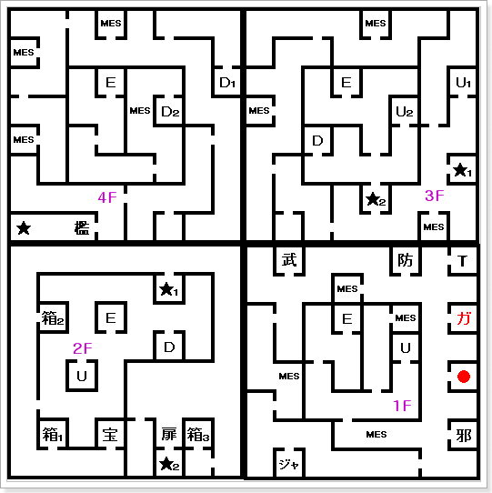
4F
3F
2F
- ★1 : 고정 악마 출현 포인트
- ★2 : 천마 야마
- 箱1 : 운의 향
- 箱2 : 마력의 향
- 箱3 : 체력의 향
록본기에서 긴자로 들어왔던 대 지하도로 가자. 긴자 반대편 방향으로 가면 이케부쿠로다.
이케부쿠로 입구에서 카오스 히어로에게 붙잡혀서 야마의 재판을 받는다.
주인공의 속성이 CHAOS : 무죄 방면이 되어 2층의 야마의 방에서 밖으로 나올 수 있다.
주인공의 속성이 LAW : 스가모프리즌 4F에 투옥된다.
주인공의 속성이 NEUTRAL : 야마의 부탁을 받는다.(YES) 무죄 방면이 되어 2층의 야마의 방에서 밖으로 나올 수 있다. → CHAOS (효과 大)
주인공의 속성이 NEUTRAL : 야마의 부탁을 받지 않는다.(NO) 스가모프리즌 4F에 투옥된다. → LAW (효과 大)
투옥됐을 경우
감옥 안에서 히로인과 몇 회 대화하다 보면 카오스 히어로가 와서 탈옥을 도와준다.
3F으로 내려와서 계단 아래에 있는 방에 들어가면 STEVEN과 만날 수 있다. 여기서 세이브와 회복을 할 수 있다.
3F에서
BOSS:귀신 니오우와 전투. HP1520, 특별히 강하지는 않다. 쓰러뜨리면
LAW 속성이 상승한다.
2F에서
BOSS:천마 야마가 있는 재판소에 가면 전투. 쓰러뜨리면
LAW 속성이 상승한다.
BOSS:천마 야마 HP1610
화염계 마법, 무드를 사용한다. 마법의 전혀 통하지 않으니 물리 공격을 사용하자.
출소(?) 이후 이케부쿠로 동쪽에 위치한 북쪽의 관을 통과해 우에노 방면으로 간다.
우에노
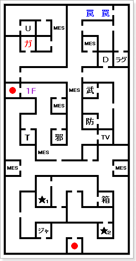
1F
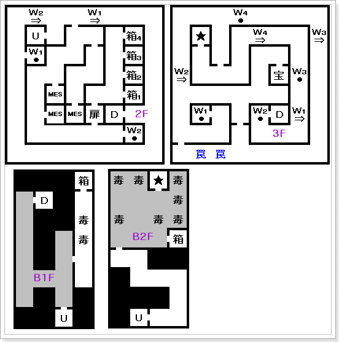
2F
- 箱1 : 천마의 구족
- 箱2 : 천마의 팔뚝
- 箱3 : 천마의 갑옷
- 箱4 : 천마의 투구
3F
B1F
B2F
터미널 근처에 있는 카오스교 신자로부터 '도쿄 타워'의 천사의 이야기를 듣는다.
우에노 거리 중앙 부근에서 '루이 사이퍼'와 유리코를 만난다. 유리코의 정체는 '야마 리리스' 주인공을 공격하려고 하다가 그만둔다.
우에노 1F 남쪽에서 악마 사용자가 소환하는 악마와 3연전
제1전 : 시귀 코프스(18) × 8
제2전 : 악령 팬텀(29) × 8
제3전 : 악령 레기온(44) × 4, 유귀 산니ㆍ야카(40) × 4
쓰러뜨리면 '메모리 보드'를 입수. 이것을 가지고 긴자 B2F에 가면 STEVEN이 중마의 스톡 수를 +2 해준다.
3F
우에노 3F에서는
루비가 있다. 이 루비를 가지고 라그의 가게에서 '정령 사라만다'와 교환하면, 시나가와에서 얻은 '쿠사나가의 검'과 합체하여 합체검 히노카구츠치를 만들 수 있다. 만들기 쉬우니 꼭 만들기 바란다.
3F의 가이아교 총본산에서 가이아교의 세례를 받을 수 있다.
주인공이 극 CHAOS 속성이며, 레벨이 65이상일 때 총본산을 찾아오면, 가이아교의 세례를 받고 2F의 잠긴 문이 열리게 된다.
이 안에는 '천마' 시리즈의 방어구가 있다. 아직 이 시점에서는 레벨 65는 될 수 없으니 신경을 쓰지 말자.
B2F
우에노 B2F에서 사룡 라둔과 전투를 한다.
BOSS:사룡 라둔 HP1730
총, 빙결에 강함.
특별히 강한 모습은 없다. 라둔을 쓰러뜨리고 방에 있는 보상을 열면 황금의 사과(黄金のリンゴ)를 입수한다.
라둔을 쓰러뜨리면
거리 부흥 후 받을 수 있는 아이템과 관련 있다. 항목 참고
우에노를 나와서 동쪽의 관을 통과하면 T.D.L에 갈 수 있다.
T.D.L
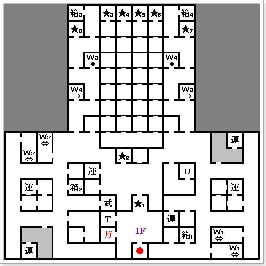
1F
- ★1 : 카오스 히어로
- ★2 : 운수 시험 접수
- ★3 : 가이아 교도
- ★4 : 엔젤
- ★5 : 구루루
- ★6 : 바지리스크
- ★7 : 고정 악마 출현 포인트
- ★8 : 고정 악마 출현 포인트
- 箱1 : 함정
- 箱2 : 함정
- 箱3 : 코어쉴드
- 箱4 : 코어쉴드
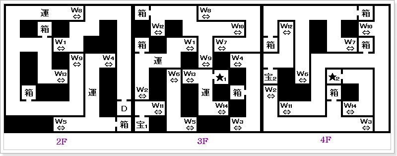
- 箱 : 운의 향(합10개)
- ★1 : 악마 사용자
- ★2 : 에키드나
- 宝1 : 오닉스
- 宝2 : 터키석
T.D.L 다리의 앞에 사라졌던 케르베로스가 지키고 있다.
'황금의 사과'를 가지고 있으면 제정신으로 돌아와 다리를 건널 수 있게 된다. (파스칼을 켈베로스로 바꾼 경우, 마수 켈베로스가 중마가 된다.)
1F
1F에서 5000마카를 내면 속성 변화의 운수 시험을 할 수 있다.
결과가 천사 엔젤, 사룡 바지리스크 → LAW 속성 증가
결과가 가이아 교도, 흉조 구루루 → CHAOS 속성 증가
운수 시험은 2번째 이후로 속성이 변화하지 않는다. 수정치도 높은 편이 아니라서 그냥 무시하는 이벤트...
3F
3F에서 악마 사용자가 소환하는 악마와 3 연전
제1전 : 유귀 베타라(46) × 4, 유귀 산니·야카(40) × 4
제2전 : 사룡 와이번(43) × 4, 사룡 와이암(37) × 4
제3전 : 사귀 라크샤사(48) × 4, 요수 만티코어(47) × 4
쓰러뜨리면 자신의 중마 중에 가장 레벨이 높은 악마보다 1랭크 높은 악마를 받을 수 있다.
4F
4F에 사신 에키드나와 회화한다. 여기서 큰 분기가 생긴다.
극 LAW 속성의 경우 : 강제적으로 BOSS:사신 에키드나와 전투.
에키드나가 시나가와의 '천사 하니엘'을 쓰러뜨려 달라고 한다. 만일 시나가와의 로우 히어로를 먼저 만나고 왔으면 선택지가 뜬다.
에키드나로부터 부탁을 수락해도 속성 변화는 없다. 임무를 완료하면 그때 변화한다.
BOSS:사신 에키드나 HP1920
화염, 전격에 강함. 총, 빙결, 신경, 긴박이 무효
'마하브후라', 마비/독 특기 공격을 해온다.
사천왕의 관
시나가와 4F의 악마 사용자를 쓰러뜨리고 얻을 수 있는 사문의 구슬(四門の玉)이 있으면 사천왕과 전투를 할 수 있다.
CHAOS 속성이라면 사천왕과 만나면 전부 중마가 되어준다. 다른 속성이라면 무조건 전투를 하게 된다.
관에서 출현하는 대부분의 악마는 주살, 파마계열 기술로 쉽게 잡을 수 있다.
- 귀신 증장천 - 서쪽의 관 (시부야)
- 귀신 항목천 - 남쪽의 관 (시나가와)
- 귀신 지국천 - 동쪽의 관 (우에노~T.D.L)
- 귀신 비사문천 - 북쪽의 관 (이케부쿠로~우에노)
최후의 선택
아래의 확정 내용대로 진행하면 속성이 고정되며 루트가 확정이 된다.
만일 에키드나/하니엘을 만났을 때 속성이
극LAW, 극CHAOS이라면 한쪽의 요구를 무조건 수락하고 반대 속성과 만나면 선택지 없이 강제 전투를 한다.
- LAW 확정
- 주인공 속성이 LAW : 사신 에키드나를 쓰러뜨리고, 천사 하니엘을 만난다 → LAW확정
- 주인공 속성이 NEUTRAL : 사신 에키드나를 쓰러뜨리고, 천사 하니엘을 만나서 협력에 응한다. → LAW확정
- NEUTRAL 확정
- 주인공 속성이 NEUTRAL : 사신 에키드나와 천사 하니엘의 협력을 모두 거절하고 쓰러뜨린다. → NEUTRAL확정
- CHAOS 확정
- 주인공 속성이 CHAOS : 천사 하니엘 쓰러뜨리고, 사신 에키드나를 만난다. → CHAOS확정
- 주인공 속성이 NEUTRAL : 천사 하니엘 쓰러뜨리고, 사신 에키드나를 만나서 협력에 응한다. → CHAOS확정
다소 복잡하지만 선택지를 잘 읽어보고 선택하면 된다.
- 주인공의 속성에 따라 진행이 달라진다.
- LAW 루트 → '천사 하니엘'를 만나면 시나가와~카테드랄에 다리를 내려준다.
- CHAOS 루트 → '사신 에키드나'를 만나면 T.D.L~카테드랄 다리를 내려준다.
- NEUTRAL 루트 → 긴자 B3F에 있는 '이노카시라 공원의 노인'과 회화를 하면 카테드랄의 지하도를 지날 수 있게 된다.
NEUTRAL루트 확정 이후 속성 변화에 대해...
NEUTRAL루트 확정으로 진행 했는데 'LAW/CHAOS'로 속성이 변화할 수 있다.
이것은 일시적으로 변동된 것이라 속성 변화 행동을 통해 다시 돌릴 수 있다.
진행되는 루트는 고정된 것이니 안심해도 된다.